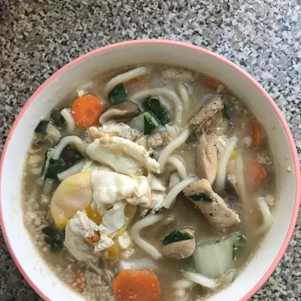

Nabeyaki Udon

Description
This is a wonderful Japanese soup, very popular throughout Japan - with chicken, eggs, and vegetables. A meal in and of itself!
Ingredients
- 6 cups prepared dashi stock
- ¼ pound chicken, cut into chunks
- 2 carrots, diced
- ⅓ cup soy sauce
- 3 tablespoons mirin
- ½ teaspoon white sugar
- ⅓ teaspoon salt
- 2 (12 ounce) packages firm tofu, cubed
- ⅓ pound shiitake mushrooms, sliced
- 5 ribs and leaves of bok choy, chopped
- 1 (9 ounce) package fresh udon noodles
- 4 eggs
- 2 leeks, diced
Steps
- Heat dashi stock, chicken, carrots, soy sauce, mirin, sugar, and salt in a pot over medium heat. Simmer until chicken is no longer pink in the center, 5 to 7 minutes. Add tofu, mushrooms, and bok choy, stirring until vegetables are tender, about 5 minutes more.
- Stir udon noodles into broth and simmer until tender, 3 to 4 minutes. Add leeks and crack eggs into soup; simmer until eggs are slightly firm, about 5 minutes more.